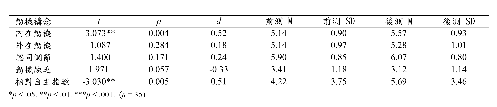

本練習以 ChatGPT Work 為主要操作路徑。學員會讓 ChatGPT Work 讀取 pre-test.xlsx，循序整理 workbook 結構、抽取重要欄位、轉換題目分數，並完成可檢視的結果表與分析報告。如果時間允許，再繼續處理 post-test.xlsx，並做前後測共同填答者的 paired t-test。需要可重複執行腳本或技術檢查時，再改用 Codex。
完成本模組後，你應該能夠：
先確認本資料夾中有以下檔案：
| 檔案 | 用途 |
|---|---|
| pre-test.xlsx | 本模組主要分析資料，已去識別化的前測問卷匯出 workbook |
| post-test.xlsx | 延伸練習資料，已去識別化，時間允許時再處理 |
本次課堂主要完成 pre-test.xlsx。post-test.xlsx 與 paired t-test 放在延伸練習，不作為基本完成門檻。
檔案說明：在 ChatGPT Work 上傳去識別化的
pre-test.xlsx即可開始；如果改用 Codex，再把 prompt 中的路徑改為相對於所選專案工作區的寫法，例如data/pre-test.xlsx或pre-test.xlsx。
| 工具 | 本模組用途 |
|---|---|
| ChatGPT 桌面 app | 從同一個 app 進入 Chat、ChatGPT Work 或 Codex；本練習從產品選單選擇 ChatGPT Work。 |
| ChatGPT Work | 主要實作工具：引導式分析 workbook、整理結果表、產生可檢視的完成報告 |
| Codex（選用） | 需要寫入、執行與檢查可重複使用的 Python／HTML 流程時使用 |
| VS Code 或文字編輯器 | 查看 Markdown、Python、HTML 與輸出檔 |
| 瀏覽器 | 開啟或檢視 ChatGPT Work 產生的結果表與分析報告 |
先開啟 ChatGPT 桌面 app，再從產品選單依任務選擇介面：Chat 適合快速釐清資料結構或分析方向；本練習以 ChatGPT Work 為主，適合循序完成問卷分析並交付可檢視的結果與報告；Codex 則保留給需要技術細節、可重複執行腳本與專案檔案管理的情況。可用功能會依方案、組織設定與推出狀態而不同。
| 選擇 | 適合這堂課的情況 | 學員要看到的內容 |
|---|---|---|
| ChatGPT Work | 主要路徑：上傳去識別化 workbook，進行引導式分析與完成報告。 | 非技術性的步驟說明、結果表、重點解讀與可審閱的成品。 |
| Codex | 延伸路徑：需要將相同流程寫成 Python／HTML，並再次執行或檢查。 | 專案檔案、指令、差異檢視與技術細節。 |
pre-test.xlsx workbook 結構讓 ChatGPT Work 先只分析 workbook schema，不要急著產生統計結論。這一步的目標是確認資料來源、工作表、header row、基本資料欄位與題目欄位。
讀取 pre-test.xlsx，分析這份前測問卷 workbook 的結構。
列出工作表、主要分析來源、header row、基本資料欄位、題目欄位，
並判斷原始選項編號能不能直接當成 Likert 分數。
ChatGPT Work 的回答至少要包含：
答題記錄(選項編號)。帳號、姓名、單位、填寫時間。Q1 到 Q16。確認 workbook 結構後，讓 ChatGPT Work 規劃受試者層級結果表。這一步仍先規劃欄位，不直接做報告。
本練習指定分數轉換規則：
Likert score = 8 - option_number
本練習指定四個構面：
| 構面 | 題目 |
|---|---|
| IM | Q1, Q5, Q9, Q13 |
| IR | Q2, Q6, Q10, Q14 |
| ER | Q3, Q7, Q11, Q15 |
| AM | Q4, Q8, Q12, Q16 |
規劃一份去識別化的受試者層級結果表。
每列代表一位填答者，不放姓名與帳號。
所有題目欄位使用 score = 8 - option_number 轉成 Likert 分數。
加入四個構面平均：
IM = Q1, Q5, Q9, Q13
IR = Q2, Q6, Q10, Q14
ER = Q3, Q7, Q11, Q15
AM = Q4, Q8, Q12, Q16
先列出結果表 schema。
id, Q1, Q2, Q3, Q4, Q5, Q6, Q7, Q8,
Q9, Q10, Q11, Q12, Q13, Q14, Q15, Q16,
im, ir, er, am
id 是去識別化代碼。Q1 到 Q16 都是轉換後 Likert 分數。im、ir、er、am 使用指定題號計算。讓 ChatGPT Work 將已確認的資料抽取與分數轉換整理成結果表，並完成可審閱的分析報告。本課的主要成果是引導式分析與完成報告；若需要可重複執行的 Python／HTML 腳本，再使用 Codex 延伸。
根據剛才確認的 pre-test.xlsx workbook 結構，
整理去識別化的受試者層級結果表，並完成一份可審閱的前測分析報告。
使用剛才確認的主要分析來源與 header row，
將所有題目欄位轉成 Likert 分數，計算 im, ir, er, am。
先呈現結果表的欄位與摘要，再用台灣中文說明資料檢查、主要發現與小樣本限制。
不要顯示姓名、帳號或其他可識別資料。
score = 8 - option_number。當結果表確認正確後，再讓 ChatGPT Work 產生簡短的信度與資料檢查報告。課堂示範以資料檢查與 Cronbach alpha 為主。
解讀構面意義時，可參考 Guay, Vallerand, and Blanchard (2000) 的情境動機量表論文，用來整理 IM、IR、ER、AM 這些構面在本次問卷資料中的意義。
根據剛才產生的 pre-test 轉換後 Likert 結果表，幫我做前測問卷的信度與效度分析。
麻煩輸出成深色主題的 HTML，檔名用 pre-test-validity-reliability.html，預設顯示台灣中文，但也要能切換成 English UI。報告一開始先給我分析結果概覽，內容至少要有資料檢查和 Cronbach alpha。
也請你參考 https://selfdeterminationtheory.org/SDT/documents/2000_GuayVallerandBlanchard_MO.pdf 這篇論文，幫我整理 IM、IR、ER、AM 這幾個構面各自代表什麼意思，並說明這次收集到的問卷資料可以怎麼解讀。
最後記得提醒一下，這次樣本數很小，結果只能當作課堂或工作坊層級的初步篩檢訊號，不是正式的量表驗證。
最後讓 ChatGPT Work 把目前完成的前測分析整理成「已完成」與「限制」兩部分。這可以當作課堂收尾，也能提醒學員不要把小樣本分析誤解為正式量表驗證。
幫我整理這次 pre-test.xlsx 的分析成果。
先講已經完成的部分：workbook 結構、重要資料抽取、分數轉換、構面平均、HTML 結果表、信度分析報告都做完了。
再講接下來要做的事：這次樣本數的限制、後測資料還沒處理，如果時間允許可以再做 paired t-test。
post-test.xlsx 並做 paired t-test如果前測結果表與信效度報告已完成，可以建議學員繼續處理 post-test.xlsx。延伸練習分成兩段：先產生後測結果表，再做前後測共同填答者的 paired t-test。
把剛才處理 pre-test.xlsx 的做法，套用到 post-test.xlsx 上。
一樣用相同規則產生去識別化的後測結果表，
並輸出 HTML：post-test-result-table.html。
根據 pre-test 與 post-test 的結果表，
找出前後測共同填答者，並針對 im, ir, er, am 四個構面進行 paired t-test。
輸出共同填答者人數、各構面的前後測平均、平均差、p 值，
並用一小段文字提醒小樣本限制。
下表為實際執行後可能產出的結果範例，供對照 ChatGPT Work 的輸出格式與內容是否合理。

Use ChatGPT Work as the primary path for Guided analysis and a finished report. It can read the de-identified pre-test.xlsx, guide the analysis step by step, and present a reviewable result. Use Codex only when you need reusable scripts, project files, or technical verification.
完成本模組後，你應該能夠：
先確認本資料夾中有以下檔案：
| 檔案 | 用途 |
|---|---|
pre-test.xlsx |
Instructor-provided de-identified workbook placed in data/ |
post-test.xlsx |
Instructor-provided de-identified extension-practice workbook placed in data/ |
本次課堂主要完成 pre-test.xlsx。post-test.xlsx 與 paired t-test 放在延伸練習，不作為基本完成門檻。
檔案說明：在 ChatGPT Work 上傳去識別化的
pre-test.xlsx即可開始；如果改用 Codex，再把 prompt 中的路徑改為相對於所選專案工作區的寫法，例如data/pre-test.xlsx或pre-test.xlsx。
| 工具 | 本模組用途 |
|---|---|
| ChatGPT desktop app | Use one app to enter Chat, ChatGPT Work, or Codex; choose ChatGPT Work from the product picker for this exercise. |
| ChatGPT Work | Primary tool for guided analysis, result tables, and a finished report. |
| Codex (optional) | Use for reusable scripts, project files, commands, and technical verification. |
| VS Code 或文字編輯器 | 查看 Markdown、Python、HTML 與輸出檔 |
| 瀏覽器 | Review the results table and final report from ChatGPT Work. |
Open the ChatGPT desktop app. Choose ChatGPT Work for this exercise: it is the primary path for guided analysis and a finished report. Use Codex only when the same work needs reusable scripts, project files, commands, or technical verification. Available features can vary by plan, organization settings, and rollout status.
| Surface | Best use in this lesson | What the learner sees |
|---|---|---|
| ChatGPT Work | Primary: upload a de-identified workbook, follow guided analysis, and finish a report. | Plain-language steps, findings, result tables, and a reviewable final output. |
| Codex | Optional extension: create, run, and check a Python/HTML workflow. | Project files, commands, diffs, and technical details. |
讓 ChatGPT Work 先只分析 workbook schema，不要急著產生統計結論。這一步的目標是確認資料來源、工作表、header row、基本資料欄位與題目欄位。
讀取 pre-test.xlsx，分析這份前測問卷 workbook 的結構。
列出工作表、主要分析來源、header row、基本資料欄位、題目欄位，
並判斷原始選項編號能不能直接當成 Likert 分數。
ChatGPT Work 的回答至少要包含：
答題記錄(選項編號)。帳號、姓名、單位、填寫Time。Q1 到 Q16。確認 workbook 結構後，讓 ChatGPT Work 規劃受試者層級結果表。這一步仍先規劃欄位，不直接做報告。
本練習指定分數轉換規則：
Likert score = 8 - option_number
本練習指定四個構面：
| 構面 | 題目 |
|---|---|
| IM | Q1, Q5, Q9, Q13 |
| IR | Q2, Q6, Q10, Q14 |
| ER | Q3, Q7, Q11, Q15 |
| AM | Q4, Q8, Q12, Q16 |
規劃一份去識別化的受試者層級結果表。
每列代表一位填答者，不放姓名與帳號。
所有題目欄位使用 score = 8 - option_number 轉成 Likert 分數。
加入四個構面平均：
IM = Q1, Q5, Q9, Q13
IR = Q2, Q6, Q10, Q14
ER = Q3, Q7, Q11, Q15
AM = Q4, Q8, Q12, Q16
先列出結果表 schema。
id, Q1, Q2, Q3, Q4, Q5, Q6, Q7, Q8,
Q9, Q10, Q11, Q12, Q13, Q14, Q15, Q16,
im, ir, er, am
id 是去識別化代碼。Q1 到 Q16 都是轉換後 Likert 分數。im、ir、er、am 使用指定題號計算。讓 ChatGPT Work 將已確認的資料抽取與分數轉換整理成結果表，並完成可審閱的分析報告。本課的主要成果是引導式分析與完成報告；若需要可重複執行的 Python／HTML 腳本，再使用 Codex 延伸。
根據剛才確認的 pre-test.xlsx workbook 結構，
整理去識別化的受試者層級結果表，並完成一份可審閱的前測分析報告。
使用剛才確認的主要分析來源與 header row，
將所有題目欄位轉成 Likert 分數，計算 im, ir, er, am。
先呈現結果表的欄位與摘要，再用台灣中文說明資料檢查、主要發現與小樣本限制。
不要顯示姓名、帳號或其他可識別資料。
score = 8 - option_number。當結果表確認正確後，再讓 ChatGPT Work 產生簡短的信度與資料檢查報告。課堂示範以資料檢查與 Cronbach alpha 為主。
解讀構面意義時，可參考 Guay, Vallerand, and Blanchard (2000) 的情境動機量表論文，用來整理 IM、IR、ER、AM 這些構面在本次問卷資料中的意義。
根據剛才產生的 pre-test 轉換後 Likert 結果表，幫我做前測問卷的信度與效度分析。
麻煩輸出成深色主題的 HTML，檔名用 pre-test-validity-reliability.html，預設顯示台灣中文，但也要能切換成 English UI。報告一開始先給我分析結果概覽，內容至少要有資料檢查和 Cronbach alpha。
也請你參考 https://selfdeterminationtheory.org/SDT/documents/2000_GuayVallerandBlanchard_MO.pdf 這篇論文，幫我整理 IM、IR、ER、AM 這幾個構面各自代表什麼意思，並說明這次收集到的問卷資料可以怎麼解讀。
最後記得提醒一下，這次樣本數很小，結果只能當作課堂或工作坊層級的初步篩檢訊號，不是正式的量表驗證。
最後讓 ChatGPT Work 把目前完成的前測分析整理成「已完成」與「限制」兩部分。這可以當作課堂收尾，也能提醒學員不要把小樣本分析誤解為正式量表驗證。
幫我整理這次 pre-test.xlsx 的分析成果。
先講已經完成的部分：workbook 結構、重要資料抽取、分數轉換、構面平均、HTML 結果表、信度分析報告都做完了。
再講接下來要做的事：這次樣本數的限制、後測資料還沒處理，如果時間允許可以再做 paired t-test。
如果前測結果表與信效度報告已完成，可以建議學員繼續處理 post-test.xlsx。延伸練習分成兩段：先產生後測結果表，再做前後測共同填答者的 paired t-test。
把剛才處理 pre-test.xlsx 的做法，套用到 post-test.xlsx 上。
一樣用相同規則產生去識別化的後測結果表，
並輸出 HTML：post-test-result-table.html。
根據 pre-test 與 post-test 的結果表，
找出前後測共同填答者，並針對 im, ir, er, am 四個構面進行 paired t-test。
輸出共同填答者人數、各構面的前後測平均、平均差、p 值，
並用一小段文字提醒小樣本限制。
The table below is a sample output from an actual run, for comparing against the format and content of ChatGPT Work's output.